Ripasso Bicchieri da Birra
Clicca sulle schede per ripassare forme, funzioni e abbinamenti dei bicchieri da birra! 🍺🥂
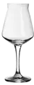
1. Chi ha ideato il famoso calice universale TEKU?Risposta: Teo Musso e Kuaska (Lorenzo Dabove)
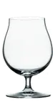
2. Quale stile di birra si serve tipicamente nel bicchiere Snifter?Risposta: Barley Wine e Imperial Stout
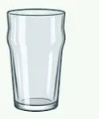
3. Quale bicchiere è noto per essere robusto e impilabile?Risposta: La Pinta
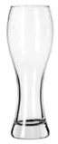
4. Qual è il nome di questo bicchiere slanciato?Risposta: Weizenglas
5. Qual è il motivo principale per cui la Pinta (specie la Nonic con la pancia) è il simbolo dei pub britannici?
Risposta: È robusta, facile da impugnare e la svasatura protegge il bordo dalle sbeccature quando viene impilata o lavata
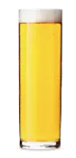
6. Quale celebre birra tedesca viene servita tradizionalmente nella tipica Stange (il bicchiere cilindrico da 0,2 litri)?Risposta: Kölsch (di Colonia)
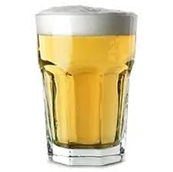
7. Come si chiama questo tipico bicchiere da birra Blanche?Risposta: Jelly
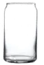
8. A quale oggetto assomiglia la forma moderna di questo bicchiere?Risposta: A una lattina di alluminio
9. Come si chiama questo bicchiere conico da pub?Risposta: Shaker
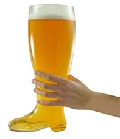
10. In quale contesto si usa storicamente lo Stivale da birra (Bierstiefel)?Risposta: Durante le feste popolari e giochi goliardici
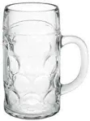
11. Qual è la funzione principale del Boccale?Risposta: Robusto, mantiene la temperatura
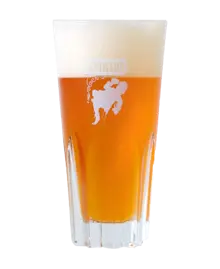
12. Quale bevanda viene tradizionalmente servita in questo bicchiere?Risposta: Birra Lambic (e Geuze / Kriek)
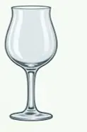
13. Qual è la funzione principale del Tulipano?Risposta: Concentra gli aromi
14. Quale bicchiere valorizza e promuove una schiuma importante grazie alla sua strozzatura?
Risposta: Il Weizenglas
15. Quali stili di birra si abbinano storicamente alla Pinta?
Risposta: Stout, Porter e Pale Ale inglesi
16. A quale stile di birra è ideale abbinare il Boccale?
Risposta: Helles, Märzen e Festbier
17. Quale bicchiere è ideale per Belgian Ale, Saison e Italian Grape Ale?
Risposta: Il Tulipano
18. Quale bicchiere trattiene e concentra alcoli importanti e grande complessità?
Risposta: Lo Snifter
19. Come viene chiamato il massiccio boccale di birra da 1 litro tipico dell'Oktoberfest?
Risposta: Mass (o Maß)
20. Perché la forma a tulipano con svasatura finale è ideale per le Belgian Ale e le Saison?
Risposta: Perché trattiene la CO2 e concentra gli aromi fruttati e spezie esaltando la schiuma